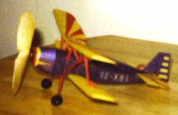

Model by Garry Hunter
Model completed this morning. Weight is 12.5 grams, Flown at Oxbow Rec. Center in Seattle. Was safe of the board.
Flying site was very cold. lots of broken motors and not much flight time.
Pic attached is not very good as it was taken wilth a Polaroid. Will have a better one by next month.
Notes:
Had more time to trim today (1/16/99) so had better times. At 12.5 grams I don't think I will get more time at this site. It sure is fun to see it skim the rafters at 25'.
Maybe at the Kibby Dome it will do better.